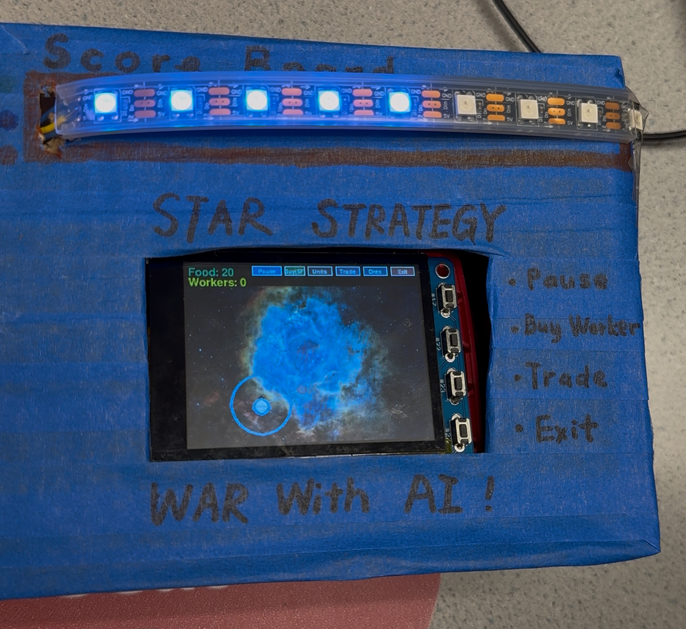
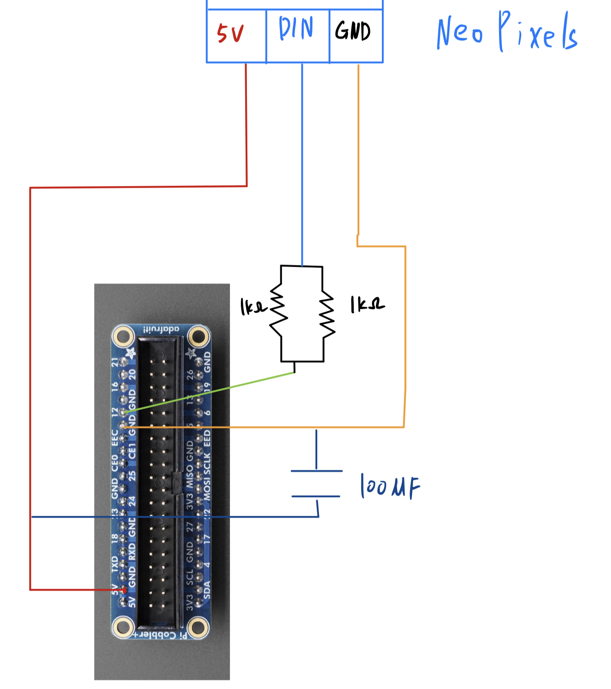
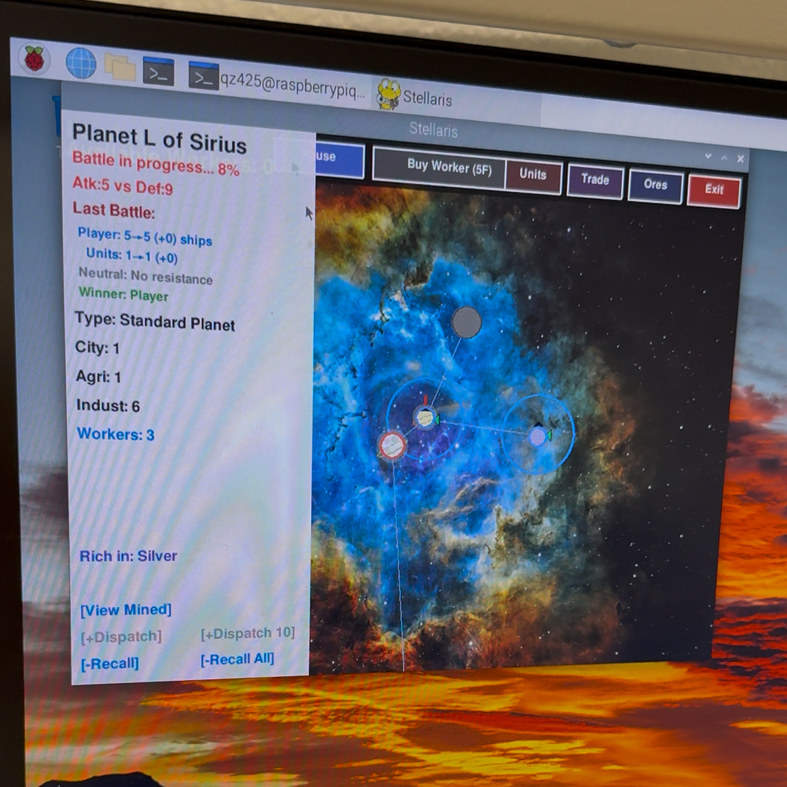

An Interstellar Strategy and AI Simulation Game Based on Raspberry Pi
A Project By Qingyin Zhong and Zhe Tong
This project implements a fully playable 2D interstellar real-time strategy (RTS) game on a Raspberry Pi 4, built with Python/Pygame and integrated with embedded peripherals. Players can pan and zoom across star systems, buy food, hire workers, mine minerals, colonize planets, manage resources, and battle an AI opponent. The win condition is to be the first to capture the opponent's homeworld. To highlight the embedded aspect, we bind the game state to a physical NeoPixel LED strip, providing low cost, high salience feedback. Additionally, the PiTFT's 4 hardware buttons are mapped to frequently-used in-game actions (pause, buy worker, trade, exit), enabling quick access without touchscreen interaction.

The game consists of 4,346 lines of code organized into 8 layered classes:
| Signal/Power | Raspberry Pi Pin | Connect To | Notes |
|---|---|---|---|
| Data | GPIO12 / BCM12 / Pin 32 | LED strip DIN | Series 500 Ω |
| GND | Any GND (e.g., Pin 6) | LED strip GND and 5 V PSU GND | All three must share a common ground |
| +5 V | External 5 V supply (+) | LED strip +5 V | — |
| Electrolytic capacitor | — | Across strip input +5 V ↔ GND | 100 µF |
The PiTFT screen includes 4 physical buttons that provide quick access to common game functions without requiring touchscreen interaction. All buttons use internal pull-up resistors and are triggered on falling edge with 200ms debounce time.
| GPIO Pin | Button Function | Description |
|---|---|---|
| GPIO 17 | Pause/Resume | Toggle game pause state during gameplay |
| GPIO 22 | Buy Worker | Purchase a worker for 5 food (if sufficient resources available) |
| GPIO 23 | Trade | Toggle trade panel display for buying/selling minerals |
| GPIO 27 | Exit | Exit the game and clean up resources (works in any game state) |
Implementation Details:

The system integrates a Raspberry Pi 4 with a NeoPixel LED strip and PiTFT buttons:
| Stage | Purpose | Steps | Expected Result |
|---|---|---|---|
| F-01 | Economic cycle | Buy workers → assign to mine → sell minerals | Assets calculated correctly with price fluctuations (±50%) |
| F-02 | Unit recruitment & transport | Buy multiple unit types → form fleet → move across star systems | Path connected, movement by edge weight, engage/colonize upon arrival |
| F-03 | Counter relationships & combat | Trigger combat with unit counters | Damage & conversions follow design, generate combat summary |
| F-04 | Victory determination | Capture enemy homeworld | Victory popup, all LEDs lit |
| F-05 | Defeat determination | Own homeworld captured | Defeat popup, all LEDs off |
| F-06 | Save/Exit | Normal exit | Resources released (LED strip off, audio stopped), no residual processes |
| ID | Purpose | Steps | Expected Result |
|---|---|---|---|
| A-01 | Connectivity | Disconnect/reconnect network | Offline triggers local if-statement logic; reconnection resumes API |
| A-02 | Decision quality | Multiple matches | Shows expansion & attack rhythm, not random wandering |
| A-03 | Decision latency | Sample continuously for 5 min | p95 ≤4 s, timeout doesn't block rendering |
| ID | Purpose | Steps | Expected Result |
|---|---|---|---|
| L-01 | Initial state | Enter game | 5 LEDs lit (neutral) |
| L-02 | Advantage growth | Continuously capture planets | LED count increases monotonically; 7–9 LEDs are green |
| L-03 | Disadvantage decline | Enemy captures planets | LED count decreases monotonically; 1–3 LEDs are orange |
| L-04 | Even state | Both sides contending | 4–7 LEDs are blue |
| L-05 | Victory/defeat mapping | Win/lose determination | Victory: all lit; Defeat: all off; refresh ≥10 Hz |
| ID | Purpose | Steps | Expected Result |
|---|---|---|---|
| T-01 | Font & layout | Run at 480×320 | Text doesn't overlap, buttons not obscured |
| T-02 | Touch accuracy | Continuously click common buttons | Low mis-tap rate, consecutive triggers possible |
| T-03 | Performance | Continuous operation for 1 min | Average ≥25 FPS |
| B-01 | Button GPIO 17 (Pause) | Press during gameplay | Game pauses/resumes correctly, no double-trigger |
| B-02 | Button GPIO 22 (Buy Worker) | Press with sufficient food | Worker purchased, resources deducted, audio feedback plays |
| B-03 | Button GPIO 23 (Trade) | Press to toggle trade panel | Trade panel appears/disappears correctly |
| B-04 | Button GPIO 27 (Exit) | Press to exit game | Clean exit with resource cleanup (LEDs off, no residual processes) |
| B-05 | Button debouncing | Rapid press any button | 200ms debounce prevents multiple triggers, no false positives |
In the end, we successfully completed the game and realized almost all of our initial ideas, solving countless issues along the way. At first, we tried to download the AI model onto the PiTFT so we could use AI battles without connecting to a phone hotspot, but we found the AI's memory footprint was too large and the local AI wasn't strong enough to feel challenging. We therefore switched to using an API for the AI, but then ran into an interesting problem: whenever the AI was "thinking," the whole game would stutter. We discovered this was because the AI and the game were running in the same thread, causing blocking; separating them into different threads resolved the issue. We faced many such problems, and ultimately worked through them all.
The only regret is that, because PiTFT touch is not precise enough, we ended up playing the game over HDMI. This doesn't match our original plan to make the PiTFT into a small handheld with on-screen controls. Our UI has many small buttons, which leads to frequent mis-taps on the PiTFT and significantly hurts the gameplay experience.

qz425@cornell.edu
AI implementation, Game menu interface, planet/star generation and linking, starship logic, sound effect implementation
zt286@cornell.edu
Trading and economic systems, mining logic, unit types, LED hardware integration and logic, button hardware integration and logic
# GPIO button configuration with pull-up resistors
import RPi.GPIO as GPIO
GPIO.setmode(GPIO.BCM)
GPIO.setwarnings(False)
# PiTFT button pins
BUTTON_17 = 17 # Pause
BUTTON_22 = 22 # Buy Worker
BUTTON_23 = 23 # Trade
BUTTON_27 = 27 # Exit
# Configure with pull-up resistors
for pin in [BUTTON_17, BUTTON_22, BUTTON_23, BUTTON_27]:
GPIO.setup(pin, GPIO.IN, pull_up_down=GPIO.PUD_UP)
# Debounce state tracking
button_last_state = {17: True, 22: True, 23: True, 27: True}
button_last_time = {17: 0, 22: 0, 23: 0, 27: 0}
DEBOUNCE_TIME = 0.2 # 200ms
# Button polling in main loop (falling edge detection)
current_time = time.time()
button_state = GPIO.input(BUTTON_17)
if button_state == False and button_last_state[17] == True:
if current_time - button_last_time[17] > DEBOUNCE_TIME:
game_world.paused = not game_world.paused
button_last_time[17] = current_time
button_last_state[17] = button_state
# NeoPixel initialization
import board
import neopixel
NEOPIXEL_PIN = board.D12 # GPIO 12
NUM_PIXELS = 9
pixels = neopixel.NeoPixel(NEOPIXEL_PIN, NUM_PIXELS,
brightness=0.44, auto_write=False)
# Game status LED update function
def update_game_status_leds(player_planet_count, ai_planet_count):
# Calculate LED count based on relative planet ownership
player_delta = player_planet_count - led_game_state['last_player_count']
ai_delta = ai_planet_count - led_game_state['last_ai_count']
# Adjust LED count
if player_delta > 0 or ai_delta < 0:
led_game_state['current_leds'] = min(9, led_game_state['current_leds'] + 1)
elif player_delta < 0 or ai_delta > 0:
led_game_state['current_leds'] = max(0, led_game_state['current_leds'] - 1)
# Set LED colors based on advantage level
for i in range(NUM_PIXELS):
if i < led_game_state['current_leds']:
if led_game_state['current_leds'] <= 3:
pixels[i] = (113, 35, 0) # Orange (disadvantage)
elif led_game_state['current_leds'] <= 6:
pixels[i] = (0, 22, 113) # Blue (even)
else:
pixels[i] = (0, 113, 0) # Green (advantage)
else:
pixels[i] = (0, 0, 0) # Off
pixels.show()
# Threaded AI to prevent game blocking
import threading
def ai_think_thread(game_world):
"""AI decision making in separate thread"""
try:
# Get game state for AI
state_description = game_world.get_ai_state_description()
# Call LLM API for decision
response = requests.post(AI_API_URL,
json={"prompt": state_description},
timeout=4)
# Parse and execute AI action
action = parse_ai_response(response.json())
game_world.execute_ai_action(action)
except Exception as e:
# Fallback to rule-based AI
game_world.rule_based_ai_turn()
# Start AI thread (non-blocking)
if game_world.ai_turn:
ai_thread = threading.Thread(target=ai_think_thread, args=(game_world,))
ai_thread.daemon = True
ai_thread.start()